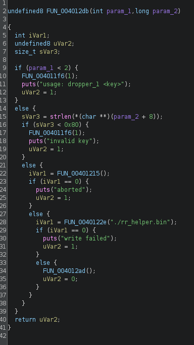
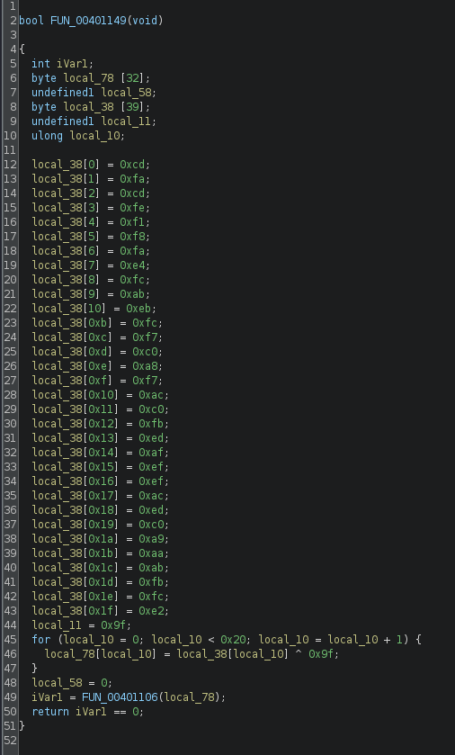

ReRange · CTF writeup
Dropper 1
Challenge: https://rerange.org/challenges/
Hello hackers, today we are going to try something new. I recently found out about this platform which aims to be a playground for learning reverse engineering. So today, I will be trying the first challenge.
This challenge is available in both exe and elf formats. Lets try to retrieve the flag.
Lets start by analyzing the elf file using Ghidra.
It is a ELF 64-bit LSB executable
The main function looks as such

We can see this executable, as the name suggests, acts like a dropper. It takes input as an arg and checks its length. If the length is 0x80 (128), it creates another .bin file called rr_helper.bin
Lets analyse that file now

We can see a set of characters, that is being XORed with 0x9f
Logic found. Lets write a python script to XOR each of those chars with 0x9f to obtain the flag.
encoded = b"\xcd\xfa\xcd\xfe\xf1\xf8\xfa\xe4\xfc\xab\xeb\xfc\xf7\xc0\xa8\xf7\xac\xc0\xfb\xed\xaf\xef\xef\xac\xed\xc0\xa9\xaa\xab\xfb\xfc\xe2"
for byte in encoded:
print(chr(byte^0x9f), end="")
We get the correct flag when we run the script. Hence, challenge solved. It was a fairly easy challenges that involves basic analysis and XOR.
I will see you with another writeup soon, till then Happy Hacking!
Attachments6 items
- decode.pypython
- dropper.pngpng
- dropper_1binary
- encoded_flag.pngpng
- notes.mdthis pagemarkdown
- rr_helper.binbin